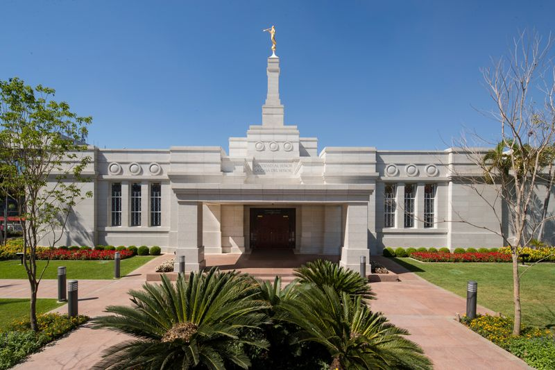
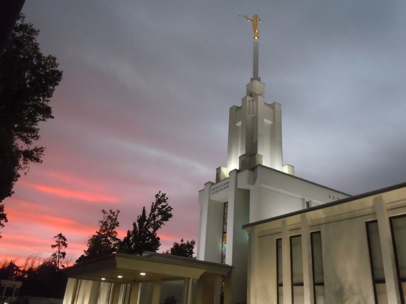
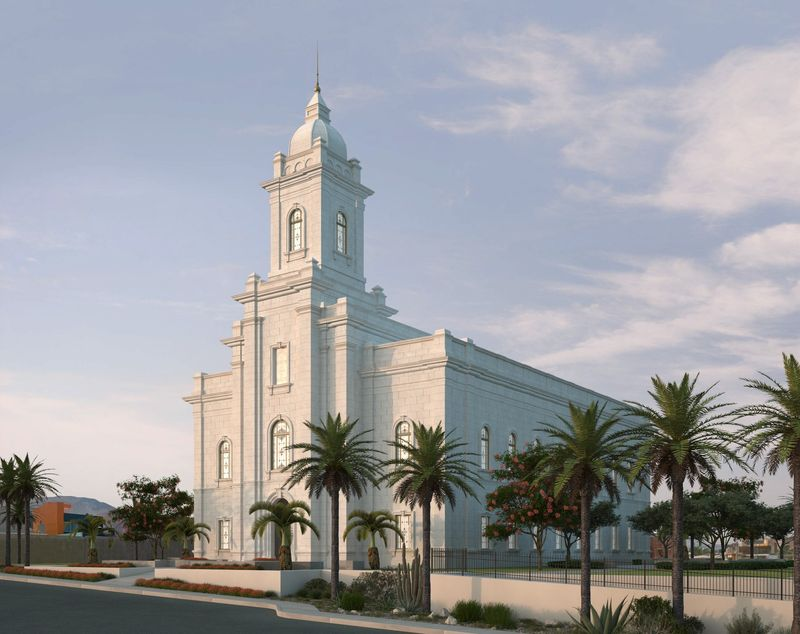

Temple Album
☰
Home
Old
New
Large
Small
Home
Temple of Uruguay

Temple of Paraguay
Temple of Buenos Aires
Temple of Bahía Blanca
Temple of Córdoba
Temple of Mendoza
Temple of Salta

Temple of Santiago

Temple of Antofagasta